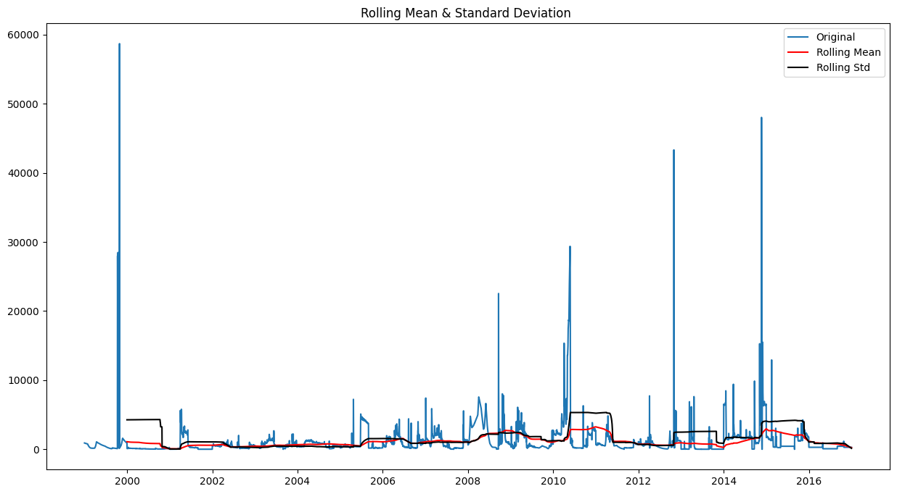
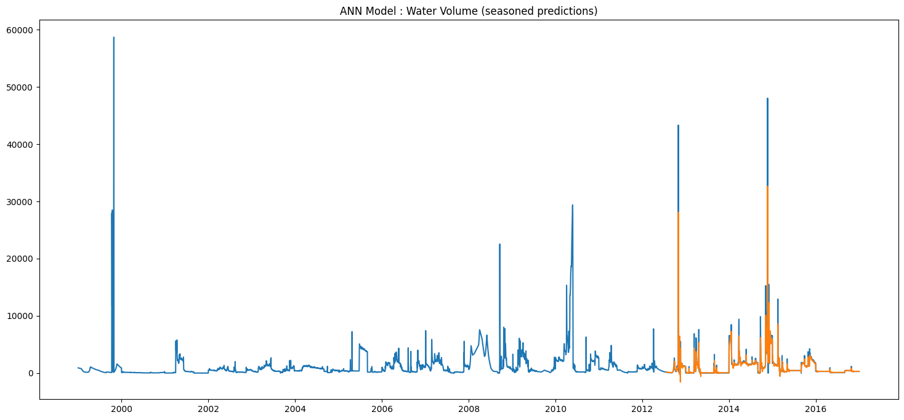
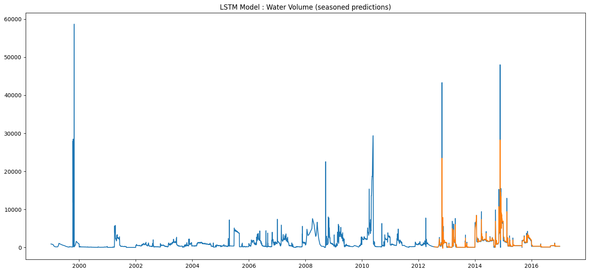
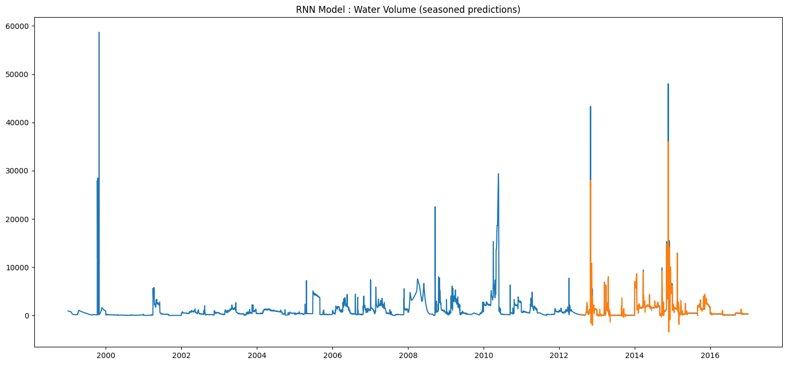

This Get Started guide is intended as a quick example to start programming with GRFlood .
► Let's install our package.
In : pip install GRFlood
► Upload our class Flood.
In : from GRFlood import Flood
► Creates an instance of the class Flood.
In : model = Flood('Example_Water_Volume.csv')
Out : Example_Water_Volume.csv(application/vnd.ms-excel) - 99369 bytes, last modified: 23/02/2021 - 100% done
Saving Example_Water_Volume.csv to Example_Water_Volume.csv
new Q (l/s)
Date
1999-01-01 910
1999-01-02 900
1999-01-03 900
1999-01-04 890
1999-01-05 890
... ...
2016-12-27 290
2016-12-28 290
2016-12-29 290
2016-12-30 290
2016-12-31 290
[6575 rows x 1 columns]
► To view our data you can print.
In : model.data
Out : new Q (l/s)
Date
1999-01-01 910
1999-01-02 900
1999-01-03 900
1999-01-04 890
1999-01-05 890
... ...
2016-12-27 290
2016-12-28 290
2016-12-29 290
2016-12-30 290
2016-12-31 290
6575 rows × 1 columns
► Normalized our data.
In : model.normalized_features(model.data)
Out: [[0.0155052 ]
[0.01533481]
[0.01533481]
...
[0.00494122]
[0.00494122]
[0.00494122]]
► To view our normalized data you can print.
In : model.dataset
Out : array([[0.0155052 ],
[0.01533481],
[0.01533481],
...,
[0.00494122],
[0.00494122],
[0.00494122]])
► Split our data.
In : model.split(model.dataset, ratio = 75)
Out : 6575
train size: 4931 and test size : 1644
► To view more details about split.
In : print("train data :{} \n test data : {} \n train size : {} \n test size : {} ".format(model.train,model.test,model.train_size,model.test_size))
Out : train data :[[0.0155052 ]
[0.01533481]
[0.01533481]
...
[0.00460044]
[0.00460044]
[0.00443006]]
test data : [[0.00425967]
[0.00425967]
[0.00408928]
...
[0.00494122]
[0.00494122]
[0.00494122]]
train size : 4931
test size : 1644
► Checking stationarity, we’ll be using the rolling statistics plots along with Dickey-Fuller test results.
For Dicky Fuller Test :
Null hypothesis in ADF test is that Data is not stationary.
- It’s better to have the p-value to be smaller than 0.05 inorder to reject the null hypothesis and consider data as stationary.
- If Test Statistic < Critical Values => Rejects the null hypothesis.
- If Test Statistic >Critical Values => failed to reject the null hypothesis
In : model.test_stationarity(model.data['new Q (l/s)'])

► In our example we can understand that my test statistics value = -8.097405e+00 is smaller than critical value(5%) = -2.861982e+00, Thus the data is stationary. If the data is not stationary we have to tranform it to make the data more stationary, using differencing technique for example.
Out : Results of Dickey-Fuller Test:
Test Statistic -8.097405e+00
p-value 1.327622e-12
#Lags Used 3.400000e+01
Number of Observations Used 6.540000e+03
Critical Value (1%) -3.431350e+00
Critical Value (5%) -2.861982e+00
Critical Value (10%) -2.567005e+00
dtype: float64
► We now experiment with the following three models:
1. Artificial Neural Network
2. Recurrent Neural Network
3. Long Short-Term Memory (a RNN with a LSTM layer)
► Plot of the predictions made by the ANN.
In : model.ANN_model(train = model.train, test = model.test, train_size = model.train_size, data = model.data, look_back = 20)

Out : Test Score: 1858.73 RMSE
Normalized RMSE: 0.03167030826699024
► Plot of the predictions made by the LSTM.
In : model.LSTM_model(train = model.train, test = model.test, train_size = model.train_size, data = model.data, look_back = 20)

Out : Test Score: 1828.80 RMSE
Normalized RMSE: 0.031160290158361494
► Plot of the predictions made by the RNN.
In : model.RNN(train = model.train, test = model.test, train_size = model.train_size, data = model.data, look_back = 20)

Out : Test Score: 1946.10 RMSE
Normalized RMSE: 0.033158903327623425